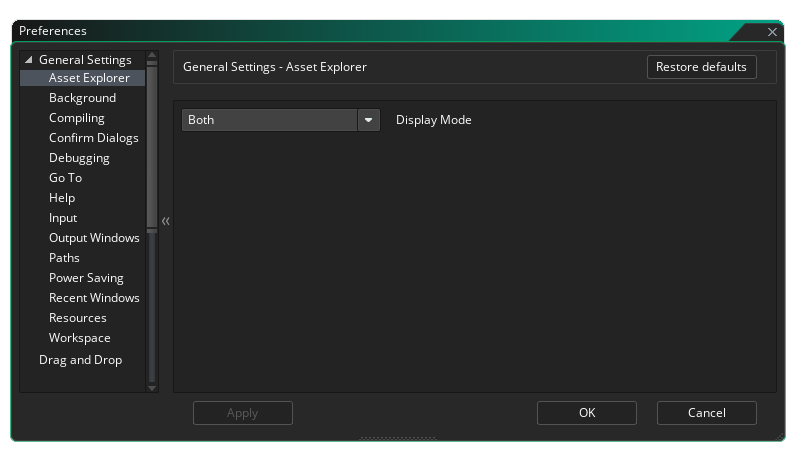

Les préférences générales sont utilisées pour définir le comportement général de l'IDE de GameMaker Studio 2. Les plus générales sont listées sur la page principale tandis que beaucoup d'autres sont divisées en plusieurs sous-catégories, expliquées plus bas sur cette page.
- IDE Language: Cette option vous permet de sélectionner la langue de l'IDE à partir de la liste des options fournies. La valeur par défaut est l'anglais.
- Skin IDE: Vous pouvez choisir parmi les différents skins que l'EDI peut utiliser. Par défaut, GameMaker Studio 2 est livré avec deux skins, un léger et un sombre, et la configuration initiale utilise la peau sombre.
- Périphérique audio par défaut: Vous pouvez choisir ici le périphérique audio par défaut à utiliser par l'IDE de GameMaker Studio 2. Vous pouvez actualiser la liste en cliquant sur le bouton Actualiser

- Réponse automatique à la confirmation de sortie: Cette option vous permet de définir si un message de confirmation doit s'afficher lorsque vous quittez GameMaker Studio 2. Par défaut, cette option est définie sur "OK", mais peut être définie pour ignorer le message comme si vous aviez cliqué sur OK.
- Activer les notifications: Cochez cette case pour que l'EDI affiche des notifications sur les nouvelles runtimes, etc... Ceci est activé par défaut.
- Délai d'expiration de la notification (ms): définit la durée (en millisecondes) pendant laquelle une notification est affichée. La valeur par défaut est 6000.
- Recharger automatiquement les fichiers modifiés: Si cette case est cochée, l'EDI analyse et vérifie automatiquement les fichiers pour voir s'ils ont été modifiés en dehors de GameMaker Studio 2 et les recharger s'ils le sont.
- Ouvrir de nouvelles ressources pour l'édition à la création: Si cette case est cochée, chaque fois que vous créez une nouvelle ressource dans l'arborescence des ressources, l'éditeur de ressources correspondant s'ouvre automatiquement. Ceci est vérifié par défaut et si vous ne le vérifiez pas, vous devrez ouvrir manuellement toutes les ressources nouvellement créées.
- Ouvrir de nouvelles ressources pour éditer les fichiers dans l'IDE: Certaines ressources (comme les sprites ou les sons) peuvent être GameMaker Studio 2 dans l'espace de travail principal de l' GameMaker Studio 2 et seront détectées et ajoutées en tant que nouvelle ressource dans l'arbre des ressources. Par défaut, l'éditeur de ressources correspondant sera également ouvert pour l'édition lorsque cela se produit, mais décocher cette option empêchera l'ouverture des éditeurs et vous devrez les ouvrir manuellement.
- Autoriser les onglets vides à se fermer via un raccourci: Vous pouvez fermer tous les onglets ouverts à l'aide du raccourci clavier
 /
/  + W, mais si vous désactivez cette option, le raccourci ne fonctionnera plus. C'est activé par défault.
+ W, mais si vous désactivez cette option, le raccourci ne fonctionnera plus. C'est activé par défault. - Désactiver les animations de transition IDE: L'IDE de GameMaker Studio 2 comporte plusieurs transitions animées pour des choses comme l'ouverture de fenêtres etc... mais elles ne sont pas du goût de tout le monde et peuvent être améliorées si elles sont désactivées sur des machines plus anciennes ou sous-équipées. sont désactivés. Vous pouvez les désactiver ici, et ils sont activés par défaut.
- Afficher l'écran de bienvenue au démarrage: il est GameMaker Studio 2 par défaut et indique simplement à GameMaker Studio 2 d'afficher un bref écran de démarrage lorsque vous démarrez le programme. Si vous ne cochez pas cette case, l'écran de démarrage ne s'affichera plus.
- Activer DPI Override: Cette option vous permet de remplacer le paramètre DPI par défaut par le vôtre. Vous devez d'abord activer l'option, puis définir la valeur Raw DPi Override (la valeur par défaut est 96) ou définir le pourcentage de DPi natif, et une fois modifié, vous serez invité à redémarrer l'IDE, ce qui peut vous obliger à sauvegarder travail en cours sur le projet actuellement ouvert.
- Opt-in aux sondages de rétroaction: lorsque cette option est cochée, vous GameMaker Studio 2 à GameMaker Studio 2 que vous souhaitez participer aux enquêtes de rétroaction, ce qui signifie qu'occasionnellement, lorsque vous travaillez, un message s'affiche sur la zone sur laquelle vous travaillez et demande une évaluation. retour d'information. Cette option est activée par défaut.
Les options ci-dessus sont les principales options disponibles dans les préférences générales, mais vous disposez d'un certain nombre d'options supplémentaires dans les sous-catégories suivantes:
Lorsque vous allez ajouter une image-objet à un objet ou lorsque vous voulez utiliser une police dans Drag and Drop ou dans un certain nombre de situations, l' Explorateur de ressources vous sera présenté:
Par défaut, il affiche à la fois une vue arborescente (à gauche) et une vue de liste (sur la droite), mais en utilisant cette préférence, vous pouvez choisir de ne montrer que l'une ou l'autre.
Les préférences Arrière-plan traitent de l'arrière-plan de l'espace de travail et de ce qu'il affichera ainsi que de la façon dont il sera affiché. Les options sont:
- Image d'arrière-plan: il s'agit du fichier image qui sera utilisé comme arrière-plan pour les différents espaces de travail. Une image par défaut est fournie et elle est activée par défaut, mais vous pouvez sélectionner votre propre image ici. Les types d'image que vous pouvez sélectionner sont *.png, *.gif, *.jpg, *.jpeg, *.tif, *.tiff, *.ico, *.bmp, *.2bp ou *.mdi, mais notez que quel que soit le format de l'image initiale, tous les fichiers seront sauvegardés pour être utilisés *.png des fichiers, si animés *.gif Les fichiers par exemple ne seront rendus que comme une seule image initiale.
- Mise à l'échelle de l'image: contrôle la façon dont l'image d'arrière-plan sera mise à l'échelle dans les différents espaces de travail. Les choix sont:
- Stretch - L'image sera étirée pour s'adapter à l'espace de travail, en changeant d'échelle en fonction des quais visibles
- Carrelage - L'image sera carrelée pour couvrir l'espace de travail
- Meilleur ajustement - L'image sera mise à l'échelle pour s'adapter proportionnellement à l'espace de travail, des barres étant ajoutées autour du bord si ce n'est pas un ajustement de 1: 1
- Desktop Stretch - L'arrière-plan couvrira tout l'espace de travail, sans tenir compte des docks visibles
- Afficher les images d'arrière-plan sur les espaces de travail: Cette option détermine si l'image d'arrière-plan sélectionnée doit être affichée ou non. Par défaut, ceci est coché comme activé.
Les préférences de compilation traitent de certaines options liées à la sortie lors de la compilation de votre jeu pour tester ou créer un package, ainsi que certaines zones du processus de compilation. Les options sont:
- Ouvrir automatiquement la fenêtre d'erreur de syntaxe lors de la détection: activer ou désactiver la notification d'erreur de syntaxe lors de la compilation. Ceci est désactivé par défaut.
- Afficher la fenêtre de compilation pendant la compilation: Par défaut, la fenêtre de compilation s'affichera lorsque vous compilerez vos projets, même si la doc de compilation est fermée (elle s'ouvrira pour la compilation). Si cette option n'est pas cochée, ce comportement sera désactivé et la fenêtre de compilation sera visible si elle est ouverte.
- Afficher les commandes du compilateur dans la sortie de compilation: Ceci est vérifié par défaut et force le compilateur à afficher toutes les commandes pertinentes dans la fenêtre de compilation. En décochant cela, la sortie sera plus petite et aura moins d'informations.
- Afficher la sortie verbeuse du compilateur: Cochez cette case pour forcer le compilateur à afficher des commandes supplémentaires liées au processus de compilation. En général, ceci n'est requis que lors du débogage et peut être demandé par le support en cas de problème. Il est désactivé par défaut (et c'est le paramètre recommandé).
- Afficher le package dans l'explorateur lors de la fin de la construction: GameMaker Studio 2 cette GameMaker Studio 2 que GameMaker Studio 2 ouvre la fenêtre de l'explorateur du système d'exploitation à l'emplacement où le package exécutable final a été créé. Il est activé par défaut.
- Effacer la fenêtre de sortie au démarrage de la compilation: Par défaut, la fenêtre du compilateur effacera tous les messages précédents de la fenêtre de sortie de la compilation au début de chaque construction, mais en décochant cela, les précédents logs du compilateur seront conservés. Cela est activé par défaut et est la configuration recommandée car les journaux de compilateur volumineux peuvent ralentir les temps de compilation.
- Port du débogueur: Ceci définit le numéro de port pour le module de débogage à utiliser. La valeur par défaut est 6509.
- Nombre maximal de travaux de compilation parallèles: Cette valeur définit le nombre maximal de cœurs de processeur à dédier à la compilation d'un projet. La valeur par défaut est 8 et en général, vous ne devriez pas avoir à changer cela, mais si vous êtes sur un ordinateur portable ou sur une machine inférieure, vous pouvez vouloir baisser cette valeur. La valeur par défaut est 8.
Les préférences Confirmer dialogue traitent de certaines fenêtres contextuelles de confirmation générales qui s'affichent lors de l'exécution de certaines actions dans l' GameMaker Studio 2. Les options sont:
- Réponse automatique à la fermeture d'un espace de travail via un raccourci clavier: Le raccourci clavier mentionné ci-dessus peut être utilisé pour fermer n'importe quel onglet ouvert, mais vous pouvez parfois fermer accidentellement un onglet vide dont vous avez besoin. Pour éviter cela, vous pouvez définir cette option sur "Afficher le message" (l'option par défaut) pour demander si vous voulez vraiment fermer cet onglet vide. Les autres paramètres sont "Non", pour ne rien faire si le raccourci est utilisé, ou "OK" pour fermer l'onglet sans aucun message.
- Réponse automatique au redémarrage d'une génération en cours d'exécution: Lorsque vous redémarrez une génération et qu'une autre précédente est toujours en cours d'exécution, il vous sera demandé si vous souhaitez d'abord arrêter la génération en cours. GameMaker Studio 2 pas ce message, ce message sera supprimé et vous GameMaker Studio 2 forcer GameMaker Studio 2 à supposer que vous avez cliqué sur "OK" en guise de réponse. Cette option est définie sur "Afficher le message" par défaut.
- Réponse automatique à l'avertissement lors de la tentative de débogage de YYC: La cible YYC est compilée en code natif et, en tant que telle, ne peut pas être déboguée à l'aide du débogueur intégré. Lorsque vous essayez d'utiliser le débogueur sur la cible YYC, vous recevez un avertissement vous informant de cela, et le fait que le projet sera compilé à l'aide de la machine virtuelle à la place. Cette option est définie sur "Afficher le message" par défaut, mais le réglage sur "OK" supprimera cet avertissement.
- Réponse automatique à la réinitialisation de la mise en page du projet: Lorsque vous choisissez de réinitialiser la mise en page du projet (à partir du menu Mise en page ), un message d'avertissement s'affiche par défaut indiquant comment cela fermera toutes les fenêtres de ressources ouvertes. Cependant, vous pouvez supprimer ce message et réinitialiser automatiquement la mise en page en sélectionnant "OK" ou ne rien faire en sélectionnant "Non". La valeur par défaut est d'avoir "Afficher le message".
- Réponse automatique à la désactivation des statistiques anonymes: Lorsque vous désactivez les statistiques de jeu anonymes dans les options du jeu général, un message d'avertissement vous demande d'examiner attentivement l'option. Vous pouvez supprimer ce message en sélectionnant "OK" ici, ou ne rien faire en sélectionnant "Non". La valeur par défaut est d'avoir "Afficher le message".
Les préférences ici sont liées au GameMaker Studio 2 et vous avez les options suivantes:
- Réponse automatique à la fermeture du débogueur: Cette option vous permet de définir la réponse automatique à la fermeture du débogueur. Si vous choisissez "Afficher le message", la boîte de dialogue s'affichera si vous souhaitez fermer le débogueur, tandis que "Oui" ou "Non" ne montrera pas ce dialogue et exécutera la tâche comme indiqué.
- Activer le débogage en temps réel: Cocher cette option vous permettra de déboguer vos projets de jeu en temps réel pendant que vous les exécutez depuis l'EDI. Ceci est vérifié par défaut.
Les préférences ici sont pour aller à la fenêtre, que vous pouvez ouvrir en utilisant le raccourci clavier
- Nombre maximal de résultats de recherche à afficher: Cette option contrôle le nombre maximal de résultats renvoyés lorsque vous utilisez la fenêtre de recherche Aller à.
Le fichier d'aide est conçu pour fonctionner comme une page Web et, en tant que tel, nécessite l'utilisation du micro serveur Web de GameMaker Studio 2 ou l'utilisation d'un navigateur externe. Ces paramètres peuvent être modifiés ici:
- Port manuel d'aide: Ceci définit le numéro de port pour le serveur web micro manuel à utiliser. La valeur par défaut est 51291.
- Utiliser un navigateur externe pour obtenir de l'aide: Si cette case est cochée, l'ouverture du fichier d'aide l'ouvrira en utilisant le navigateur par défaut de votre système. Cette option est activée par défaut et l'arrêt force l'ouverture du fichier d'aide dans l'espace de travail de l'EDI.
Les préférences d'entrée contrôlent certains aspects de l'entrée de la souris et du clavier dans l'EDI. Les options disponibles sont:
- Temps de double-clic lent (ms): Certaines zones de l'IDE nécessitent un double-clic plus lent pour fonctionner correctement, par exemple lors du changement de nom d'une ressource (un double-clic rapide ouvrira l'éditeur de ressources, un double clic lent vous permettra de le renommer ). Cette option vous permet de définir la vitesse de détection, avec une valeur par défaut de 500ms.
- Temps de verrouillage du défilement (ms): Cette option concerne le délai GameMaker Studio 2 lequel GameMaker Studio 2 doit attendre entre les fenêtres de défilement qui se chevauchent. Essentiellement, lorsque vous faites défiler la fenêtre "A", le curseur peut survoler une autre zone de défilement dans la fenêtre "B", cette préférence définit combien de temps vous devez attendre après avoir arrêté de défiler "A" avant de pouvoir défiler " B ", vous ne faites donc pas défiler accidentellement différents panneaux. La valeur par défaut est 500ms.
- Vitesse de défilement: Ceci contrôle la vitesse de défilement dans les différents espaces de travail. La valeur par défaut est 1.
- Distance de déplacement d'un onglet vers un bureau non optimisé (px): Lorsque vous faites glisser un onglet d'espace de travail hors de sa position par défaut dans l'EDI, si un seul espace de travail est actif à ce moment, la fenêtre de GameMaker Studio 2 la souris (si vous avez plus d'un espace de travail actif, une nouvelle instance de l'EDI sera créée pour contenir l'espace de travail). Ce paramètre détermine dans quelle mesure vous devez faire glisser l'onglet avant que l'espace de travail ne le reconnaisse, et la valeur par défaut est 50px.
- Niveau de zoom minimum pour interagir avec le contenu de la fenêtre (%): Cette option contrôle le point de zoom auquel la souris ne pourra plus interagir avec les fenêtres de l'espace de travail (ajouter des nœuds, faire glisser des fenêtres, etc...). La valeur par défaut est 40.
- Le zoom de la molette de la souris nécessite une touche Ctrl: lorsque cette case est cochée, tous les éditeurs (et l'espace de travail principal) verront le zoom activé avec
, tout en décochant il permettra le zoom avec seulement la molette de la souris
Les préférences de la fenêtre de sortie contrôlent les différentes options de couleur et de formatage pour les différentes fenêtres de sortie de l'EDI. Chacune des différentes fenêtres a le même ensemble d'options, qui sont listées ci-dessous:
- Couleur: Couleur par défaut du texte écrit dans la fenêtre.
- Nom de la police: Le nom de la police à utiliser (les polices disponibles dépendent de celles installées sur votre système).
- Style: Le style de police à utiliser, comme le gras ou l' italique (notez que toutes les fenêtres n'autoriseront pas les mêmes styles et dépendront aussi de la police utilisée).
- Taille: La taille à laquelle définir la police pour la fenêtre de sortie donnée.
- Anti-Aliasing: Ici, vous pouvez définir le mode anti-aliasing pour le rendu de la police de la fenêtre de sortie. Vous pouvez choisir de laisser l'IDE décider en sélectionnant Utiliser par défaut, ou vous pouvez forcer ou désactiver en sélectionnant l' une de ces options.
Les préférences Path contrôlent les différents chemins de fichiers requis par les éléments de l' GameMaker Studio 2, ainsi que les éditeurs externes dont vous avez besoin. Les options suivantes existent pour l'EDI:
- Répertoire temporaire: L'emplacement pour enregistrer tous les dossiers temporaires. Par défaut, c'est \Users\<Username>\AppData\Local\Temp\GameMakerStudio2.
- Répertoire de cache IDE: Emplacement de sauvegarde du cache IDE. Par défaut, c'est \Users\<Username>\AppData\Roaming\GameMakerStudio2-Dev\Cache.
- Répertoire du cache des actifs: emplacement où enregistrer le cache des actifs pour chaque projet. Par défaut, c'est \Users\<Username>\AppData\Roaming\GameMakerStudio2-Dev\Cache.
- Emplacement "My Projects": L'emplacement où GameMaker Studio 2 créera initialement de nouveaux projets. Par défaut, c'est \Users\<Username>\Documents\GameMakerStudio2.
- Supprimer automatiquement le répertoire temporaire à la fermeture: GameMaker Studio 2 cette GameMaker Studio 2 forcer GameMaker Studio 2 à supprimer automatiquement le dossier Temp qu'il crée par projet pour la compilation etc... Ce paramètre est activé par défaut, et le GameMaker Studio 2 désactive (ce qui signifie que vous devrez supprimer manuellement les fichiers temporaires plus tard).
- Supprimer automatiquement le cache des actifs à la fermeture: Si cette case est cochée, le dossier du cache du compilateur d'actifs sera supprimé lorsque vous GameMaker Studio 2. Ceci est désactivé par défaut, et l'activer signifie que chaque fois que vous chargez et exécutez un projet, le cache devra être reconstruit (ce qui peut prendre du temps en fonction de la taille du jeu).
- Supprimer automatiquement le cache IDE à la fermeture: Si cette case est cochée, le dossier du cache du compilateur IDE sera supprimé lorsque vous GameMaker Studio 2. Ceci est désactivé par défaut, et l'activer signifie qu'à chaque démarrage de GameMaker Studio 2, le cache devra être reconstruit.
- Supprimer le dossier temporaire: Cliquez sur ce bouton pour supprimer le dossier temporaire du projet.
- Supprimer le cache des actifs: Cliquer sur ce bouton effacera le cache des ressources du compilateur pour le projet.
- Supprimer le cache IDE: Cliquez sur ce bouton pour supprimer le cache IDE.
Les options suivantes existent pour définir des chemins vers des éditeurs externes:
- Chemin d'accès à l'éditeur / visualiseur externe pour les fichiers SWF: Si vous travaillez avec des sprites au format SWF, vous pouvez définir le chemin de votre visionneuse / éditeur préféré et lorsque vous cliquez sur le bouton Modifier l'image dans l'éditeur Sprite, programme. La valeur par défaut ici est de n'avoir aucun chemin.
- Chemin d'accès à l'éditeur / visualiseur externe pour les fichiers Spine: Si vous travaillez avec des sprites au format Spine, vous pouvez définir le chemin de votre visionneuse / éditeur préféré et lorsque vous cliquez sur le bouton Modifier l'image dans l'éditeur Sprite, programme. La valeur par défaut ici est de n'avoir aucun chemin.
Les préférences Économie d'énergie affecteront la puissance du processeur et la puissance du GPU utilisées pour générer l'IDE de GameMaker Studio 2 (essentiellement, cela réduira le taux de rafraîchissement de base auquel le programme s'exécute et donc la consommation d'énergie). Notez que certaines d'entre elles sont spécifiques au processus d'arrière-plan File Watcher. File Watcher analyse les dossiers du projet pour les changements externes - par exemple, si vous changez un script gml dans Notepad ++ alors le vérificateur de fichiers détectera cette modification et vous demandera si vous voulez le recharger ou le supprimer - et ainsi la fréquence de ce scan Cela peut avoir de graves répercussions sur les performances et la consommation d'énergie.
Les options ici sont:
- Framerate de puissance AC (%): Le modificateur d'image de base IDE lorsqu'il est connecté à une entrée de puissance. La valeur par défaut est 100%.
- Framerate de puissance de batterie (%): Le modificateur de base de framerate IDE lors de l'utilisation de la batterie pour alimenter la machine. La valeur par défaut est de 35%.
- Framerate en arrière-plan (%): Le modificateur de framerate IDE de base lorsque GameMaker Studio 2 n'est pas au point (indépendamment de l'alimentation). La valeur par défaut est 15%.
- Fréquence d'observation du fichier (ms): C'est la fréquence à laquelle l'observateur de fichiers s'exécutera sur le bureau (ou sur un ordinateur portable connecté à un ordinateur). La valeur par défaut est 2000.
- Fréquence de surveillance des fichiers d'ordinateur portable (ms): C'est la fréquence à laquelle l'observateur de fichiers s'exécutera en mode ordinateur portable. La valeur par défaut est 5000.
Les préférences ici contiennent des options sur la manière dont la liste Recent Windows affichera les éléments:
- Ouvrir automatiquement lors du chargement du projet: Lorsque cette option est activée, la liste des fenêtres récentes s'affiche lorsque vous chargez un nouveau projet. La valeur par défaut est désactivée.
- Déplacer les fenêtres focalisées vers le haut: Lorsque cette option est activée et que vous cliquez sur un élément de la liste Fenêtre Récente, l'élément sélectionné sera déplacé en haut de la liste. Par défaut, c'est désactivé.
- Afficher uniquement les fenêtres actuellement ouvertes: Si vous activez cette option, la liste Recent Windows supprimera les éléments qui ne sont plus ouverts dans un espace de travail (par exemple, la fermeture d'une fenêtre la supprimera également de la liste). Par défaut, c'est désactivé.
- Nombre maximal de fenêtres à afficher: Ceci définit le nombre maximum de fenêtres précédemment ouvertes qui seront affichées dans la liste Fenêtres récentes. La valeur par défaut est 10.
Les préférences ici contiennent des options sur la façon dont certaines ressources seront dessinées dans vos projets:
- Couleur de dessin par défaut initiale pour les nouveaux projets: Lorsque vous utilisez une police ou dessinez une forme à l'aide des fonctions de GameMaker Studio 2 ou des actions DnD™ sans spécifier de couleur, la couleur définie ici est celle qui sera utilisée. La couleur par défaut est le noir ( $00000000 ).
Les préférences ici affectent la façon dont vous vous déplacez dans les différents GameMaker Studio 2 travail GameMaker Studio 2. Les options sont:
- Degrés de degré de navigation de clavier d'espace de travail: Dans un espace de travail vous pouvez avoir plusieurs fenêtres ouvertes pour différents objets et ressources, et ainsi pour vous déplacer rapidement entre eux vous pouvez utiliser le raccourci clavier
+ <Arrow Keys> se déplacer entre eux. Étant donné que les fenêtres d'un espace de travail ne sont pas alignées sur la grille, l'EDI doit choisir la fenêtre que vous voulez utiliser lorsque vous appuyez sur l'une des 8 directions possibles, et cette option vous permet de définir l'angle de vue utilisé. La valeur par défaut est 40 °.
- Rembourrage de colonne de chaîne de l'espace de travail (px): Les éléments de l'espace de travail sont souvent "chaînés" (par exemple, l'éditeur de code est enchaîné à l'éditeur d'événements) et cette option vous permet de définir la distance horizontale entre deux fenêtres enchaînées. La valeur par défaut est 30px.
- Rembourrage des lignes de la chaîne de l'espace de travail (px): Comme mentionné ci-dessus, les éléments de l'espace de travail sont souvent "chaînés" entre eux et cette option vous permet de définir la distance verticale entre deux fenêtres chaînées. La valeur par défaut est 20px.
- Nombre de segments de rendu de chaîne d'espace de travail: Vous pouvez définir ici le nombre maximal de segments pour les chaînes de rendu. L'abaissement de cette valeur peut améliorer les performances sur les machines inférieures. La valeur par défaut est 20.
- Couleur du lien de chaîne de l'espace de travail: Il s'agit de la couleur qui sera utilisée pour afficher les chaînes entre les éléments de l'espace de travail. La couleur par défaut est $99DD00 avec un alpha de 153 ( $99 ).
- Zoom sur la réinitialisation du clavier de l'espace de travail: Comme mentionné ci-dessus, vous pouvez passer d'une fenêtre à l'autre dans l'espace de travail en utilisant les raccourcis clavier. Vous pouvez également agrandir et réduire l'espace de travail en utilisant le
. Si vous définissez cette option, cela signifie que si l'espace de travail est agrandi et que vous utilisez les raccourcis pour passer à une autre fenêtre, l'espace de travail sera renvoyé à une vue 1: 1 et centré sur la fenêtre sélectionnée. Cette option est désactivée par défaut.
- Les chaînes d'espace de travail peuvent se chevaucher: Lorsqu'elle est activée, cette option permet aux chaînes d'espace de travail de se croiser et de se chevaucher. Ceci est désactivé par défaut.